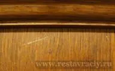
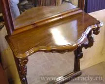
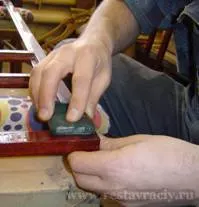
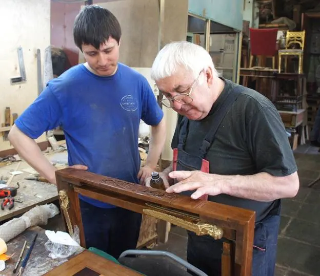

Работы и техники
Устранение царапин на лаке
Убрать царапины на лаке можно несколькими способами.


Видеозаписи мастерской
О чём рассказывает мастерская
- Устранение царапин на старинной мебели
- Видео устранение царапин на мебели способом регенерации лака
- Чего делать категорически нельзя при удалении царапин на современной мебели?
- Полироль для лакированной мебели от царапин
- Лак для царапин
- Как убрать царапины с лакированного пола
- Ремонт глубоких царапин на мебели
- Устранение царапин на мебели из дерева
- Реставрация царапин на мебели
- Закрасить царапины на мебели
В материале мастерской
Фотографии и детали



Открыть снимок у мастерской


Открыть снимок у мастерской


Открыть снимок у мастерской
Есть похожая вещь?
Подберите ракурсы для предварительной оценки.